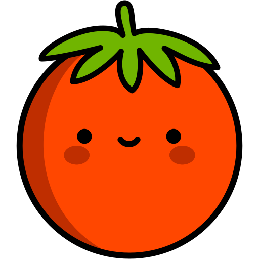
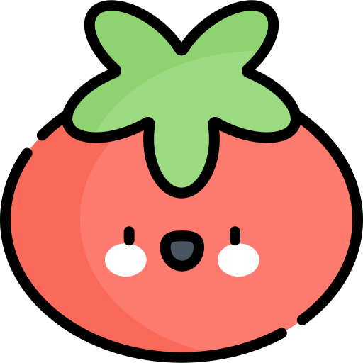
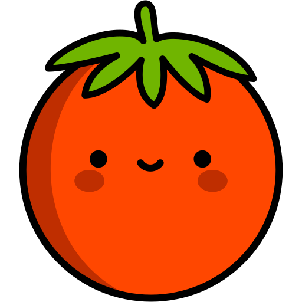
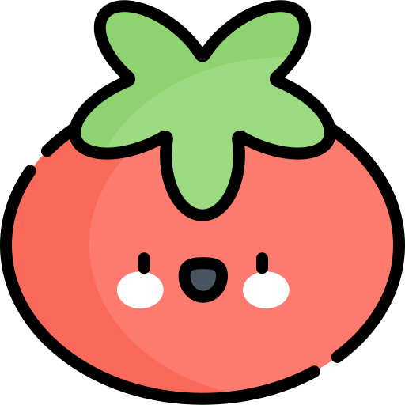

Enter here all the tasks you want to accomplish during the day.
 Explanation:
Explanation:The Pomodoro Method is a time management technique developed by Francesco Cirillo in the late 1980s, designed to improve productivity and focus. Its basic principle is based on breaking down work into short intervals, called "Pomodoros", which typically last 25 minutes, followed by a brief 5-minute break.
 



Each Pomodoro is a workspace during which the individual devotes themselves fully to a specific task, without distraction. The goal is to remain focused on the task until the Pomodoro is due, then take a short break to recharge. After four Pomodoros, a longer break, usually 15 to 30 minutes, is taken, allowing one to recharge before starting new cycles.